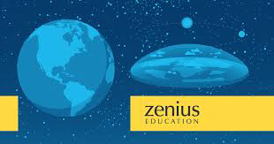

BUKTI BUMI BULAT DARI PENGANUT BUMI DATAR
Banyak penganut Bumi datar yang telah mengeluarkan sangat banyak tenaga dan dana untuk melakukan berbagai macam observasi dan eksperimen. Mereka telah membeli peralatan mahal, bepergian jarak jauh ke negara lain, mendesain eksperimen dengan sangat mendetail dan melakukan percobaan skala-besar; semua untuk membuktikan keyakinan mereka bahwa Bumi datar. Namun banyak dari eksperimen dan observasi tersebut ternyata merupakan bukti tak terbantahkan bahwa Bumi berbentuk bulat.
Pada kebanyakan kasus, mereka tak akan menerima kesimpulan tersebut. Biasanya mereka akan menyalahartikan, menolak, berbohong dan menutupi hasilnya. Hal tersebut disebabkan faktor psikologis yang dinamakan confirmation bias. Walaupun demikian, hasil eksperimen dan observasi mereka berbicara lebih nyaring daripada klaim-klaim yang mereka sampaikan, dan semuanya adalah bukti valid bahwa Bumi berbentuk bulat.
Ini adalah beberapa dari observasi dan eksperimen tersebut, dimana kaum Bumi datar telah berusah payah dan mengeluarkan banyak biaya untuk melakukannya. Dan setelah itu dilakukan, mereka justru mengambil kesimpulan yang salah dan dengan spektakuler mendemonstrasikan confirmation bias mereka ke seluruh dunia.
1. Balon Ketinggian Tinggi dari Rob Skiba
Rob Skiba meluncurkan beberapa balon ketinggian tinggi untuk merekam lengkungan Bumi, dengan harapan tidak ada lengkungan Bumi yang terlihat. Dia menggunakan kamera GoPro hasil modifikasi agar tidak menghasilkan gambar dengan distorsi seperti GoPro biasanya. Harapannya adalah agar lengkungan Bumi yang menurutnya diakibatkan lensa fisheye akan terlihat datar.
Hasil rekamannya ternyata jelas memperlihatkan lengkungan Bumi. Namun dia menolak untuk mengakuinya, dan menyimpulkan hasilnya datar, tanpa melakukan usaha untuk mengukurnya, seperti yang telah dilakukan banyak pihak yang lain.
2. Video Transit ISS oleh Jeranism
Jeran Campanella (Jeranism di YouTube) merekam transit ISS di depan Bulan. Dan dengan hasil yang sangat baik pula. Transit ISS adalah fenomena yang terjadi kurang dari dua detik. Merekam transit ISS membutuhkan perencanaan di depan dan persiapan yang sangat teliti. Hal ini juga melibatkan perhitungan yang menggunakan parameter orbit dari ISS, dan dengan demikian membutuhkan pemahaman yang benar mengenai bentuk Bumi yang benar, yaitu bulat. Jeran tentunya tak melakukan perhitungannya sendiri, tetapi jika perhitungannya dapat memprediksi waktu dan lokasi transit ISS dengan ketepatan sangat tinggi, sampai ke detik terdekat, maka Bumi pasti berbentuk bulat.
Jeran menolak untuk menerima kesimpulan tersebut. Lagi-lagi dia justru menggunakan alasan-alasan lamanya untuk menolak keberadaan ISS.
3. Percobaan Mengukur Jarak Matahari dari FE101
FE101, komunitas dari korban-korban Bumi datar yang ada di Indonesia, melakukan percobaan tongkat & bayangan berskala nasional. Tujuannya adalah untuk mengukur jarak Matahari, dan untuk mengetahui apakah model datar atau model bulat yang lebih tepat mewakili bentuk Bumi yang benar.
Ternyata mereka tak mampu mendapatkan angka yang konsisten untuk jarak Matahari. Namun, dari data yang mereka dapatkan, kita dapat ketahui menghasilkan jari-jari Bumi yang konsisten. Hal ini membuktikan model Bumi bulat lebih akurat daripada model Bumi datar.
Mereka dengan berbagai macam alasan menolak realitas tersebut. Sebagian dari mereka menghabiskan seminggu untuk memanipulasi hasilnya dengan menyembunyikan “data yang buruk.” Sebagian lagi mencari suaka kepada oknum Bumi datar yang menamakan dirinya Dr.Zack. Dr.Zack kemudian menciptakan satu lagi asumsi di atas asumsi untuk “menjelaskan” mengapa hasil yang mereka dapatkan “tidak sesuai dengan harapan,” tentunya tanpa merasa perlu untuk memberikan buktinya.
4. Giroskop Cincin Laser Seharga $20000 Milik Bob Knodel yang Membuktikan Bumi Berotasi
Film dokumenter “Behind the Curve” menguak fakta bahwa selebritas Bumi datar Bob Knodel yang merupakan anggota dari kelompok yang menamakan dirinya ‘Globebusters’ telah membeli sebuah giroskop cincin laser seharga $20000. Mereka melakukannya untuk membuktikan tanpa keraguan bahwa Bumi tak bergerak.
Namun giroskop tersebut berpendapat berbeda. Giroskop mencatat gerakan 15°/jam yang konsisten dengan gerak rotasi Bumi. Tak bersedia untuk menarik kesimpulan yang benar, Knodel mencoba untuk menyembunyikan hasilnya sampai dia “berhasil” mendapatkan hasil “yang benar” dengan giroskop tersebut. Sampai saat ini dia tidak berhasil melakukannya, dan tentu saja tidak akan pernah berhasil.